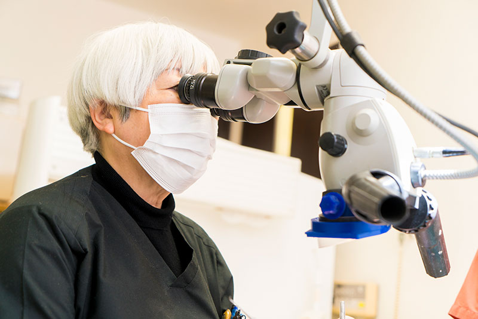
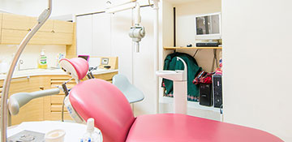
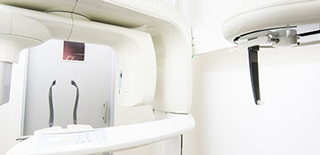
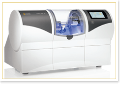
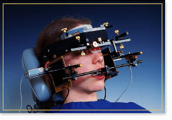
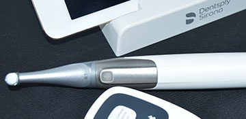
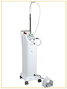

- ホーム
- 院内・設備紹介・医療費控除について
吉川歯科診療所の院内設備・知っておきたい医療費控除
大阪四ツ橋駅から徒歩2分の吉川歯科医院では、歯科用CTやセレックなど院内設備を充実させ、検査・診断・治療で使用しております。また、根管治療やインプラント治療ではマイクロスコープを使用するなど、最先端の治療設備を導入して精度の高い治療をおこなっております。こちらのページでは、当院の設備のほか、医療費控除についても紹介しておいります。
設備・院内のご紹介
吉川歯科医院では最先端の治療設備を導入して治療をおこなっております。また、患者様にご来院しやすく治療を安心してお受けいただける明るいご対応と環境づくりを心掛けております。
マイクロスコープ

マイクロスコープ（歯科用顕微鏡）とは、肉眼の20倍にまで患部を拡大できる医療用の顕微鏡です。実は医科の手術で使用されていたものを歯科用に活用したもので、全国的には3～4％程度の普及率に留まっており、日本においてはまだそれほど普及していません。治療の対象となる歯牙組織は、非常に精緻で多くの病変は目で確認することが困難です。そういった治療の精度を向上させるため、マイクロスコープが選ばれています。
マイクロスコープのメリット
- 01
-
経験や勘だけでなく、
たしかな治療を行うことができる肉眼で確認することができない深部に及ぶ虫歯や根管内の病変は、歯科医師の経験を頼りに治療を進めていくことがあります。そこで肉眼の20倍にまで視野を拡大できるマイクロスコープを導入することで、高度な治療を実践することができます。
- 02
-
精密な治療はできる
マイクロスコープでは見落としがちな小さな虫歯や、根管内の微細な構造をしっかりと確認することができます。虫歯の再発や不適切な根管治療をしないためにも、精密な治療を心掛けています。
- 03
-
処置を行った箇所を映像で確認できる
マイクロスコープにはCCDカメラが設置されており、歯科医師がどのように治療をしたのリアルタイムで確認することができます。映像を用いた治療内容の説明を受けたい場合はご相談ください。患者様ご自身に治療内容を正確に把握して頂く手助けとなります。
-
診察台（ユニット）

各診療台はパーテーションで仕切られておりプライバシーにも配慮したユニットとなっております。隣の患者様の視線を気にすることなく、治療を受けていただけます。衛生面にも配慮しておりますので安心してお掛けいただけます。
-
歯科用CT

従来のレントゲンは2次元画像でしたが、歯科用CTは立体画像（3D画像）を撮影することでお口の構造などの詳細な情報を得ることができ、精度の高い治療をおこなうことが可能です。
-
セレック

セレックとは、医療先進国であるドイツで開発された歯の修復物を設計・製作するCAD/CAMシステムです。コンピュータにより、スピーディかつ安価に修復物を作製します。
-
CADIAX（キャディアックス）

キャディアックスとは下顎の運動を記録して、患者様の骨格のデータを解析する測定器です。測定データの解析結果に基づいて、治療計画立案に使用する咬合器の設定をおこなったり、最終補綴物を製作します。
-
Propex IQ 根管測定器

根管測定器で、専用アプリと繋げることでビジュアルで確認することができます。操作方法も簡単なので、より質の高い治療をお届けできます。
-
レーザー治療器

当院ではレーザーを使用して歯ぐきの治療などをおこなっております。痛みの少ない治療を多くの患者様に受けていただいております。
医療費控除について
医療費控除の条件
- ご自身やご家族が1年間（1月1日〜12月31日）で支払った医療費の総額で10万円を超えていること
- 所得が200万円未満の場合、医療費の合計が年間所得の5%を超えていること
- 所得税を納税していること
- 医療保険等で補填された場合には、その金額を除いた額が「医療費」となる
医療費控除の対象となる歯科治療
- 医療費控除の対象となるもの
- 虫歯治療・歯周病治療・入れ歯治療・抜歯処置・セラミック治療・金属の詰め物・被せ物など
- インプラント・子どもの矯正治療・咀嚼障害や咬み合わせの改善を目的とした矯正治療
- 通院にかかった交通費
- 医療費控除の対象にならないもの
- 歯のクリーニング・美容目的の矯正治療・ホワイトニング・ラミネートベニア
- 健康診断の費用・医師への謝礼・自家用車のガソリン代・駐車場代
医療費をクレジットカードなどで支払った場合
歯の治療費をクレジットカードやデンタルローンを使用した場合でも医療費控除は適用されます。
デンタルローンは信販会社の審査に通ると治療費を立て替えてもらいます。立て替え分の金額も患者様の医療費控除対象となります。なお、医療費控除では歯科医院の領収書が必要ですが、デンタルローンをご利用でお手元に歯科医院の領収書がない場合は、デンタルローンの契約書の写しを添付書類としてご利用いただけます。